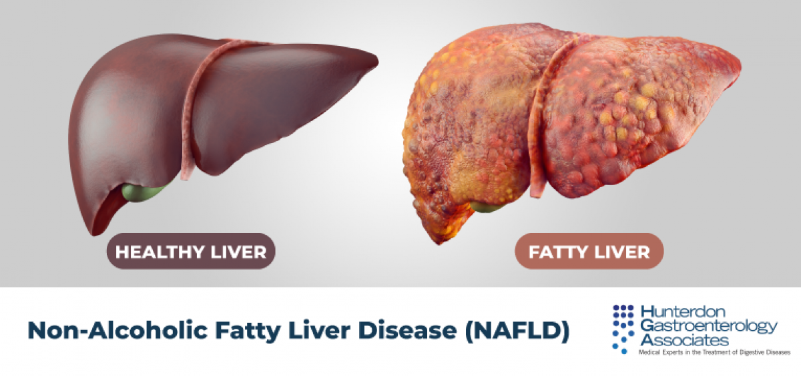

Fatty liver disease

SYMPTOMS:
- Abdominal swelling (ascites)
-
Enlarged blood vessels just beneath the skin's surface
-
Enlarged spleen
-
Red palms
-
Yellowing of the skin and eyes (jaundice)
CAUSES
Experts don't know exactly why some people accumulate fat in the liver while others do not. Similarly, there is limited understanding of why some fatty livers develop inflammation that progresses to cirrhosis.
- Overweight or obesity
-
Insulin resistance, in which your cells don't take up sugar in response to the hormone insulin
-
High blood sugar (hyperglycemia), indicating prediabetes or type 2 diabetes
-
High levels of fats, particularly triglycerides, in the blood
DIAGNOSIS:
Blood Test
- Complete blood count
-
Liver enzyme and liver function tests
-
Tests for chronic viral hepatitis (hepatitis A, hepatitis C and others)
-
Celiac disease screening test
-
Fasting blood sugar
-
Hemoglobin A1C, which shows how stable your blood sugar is
-
Lipid profile, which measures blood fats, such as cholesterol and triglycerides
Imaging Procedure
- Abdominal ultrasound, which is often the initial test when liver disease is suspected.
-
Computerized tomography (CT) scanning or magnetic resonance imaging (MRI) of the abdomen. These techniques lack the ability to distinguish NASH from NAFLD, but still may be used.
-
Transient elastography, an enhanced form of ultrasound that measures the stiffness of your liver. Liver stiffness indicates fibrosis or scarring.
-
Magnetic resonance elastography, works by combining MRI imaging with sound waves to create a visual map (elastogram) showing the stiffness of body tissues
TREATMENT
- The first line of treatment is usually weight loss through a combination of a healthy diet and exercise. Losing weight addresses the conditions that contribute to NAFLD. Ideally, a loss of 10% of body weight is desirable, but improvement in risk factors can become apparent if you lose even 3% to 5% of your starting weight. Weight-loss surgery is also an option for those who need to lose a great deal of weight.
-
For those who have cirrhosis due to NASH, liver transplantation may be an option.